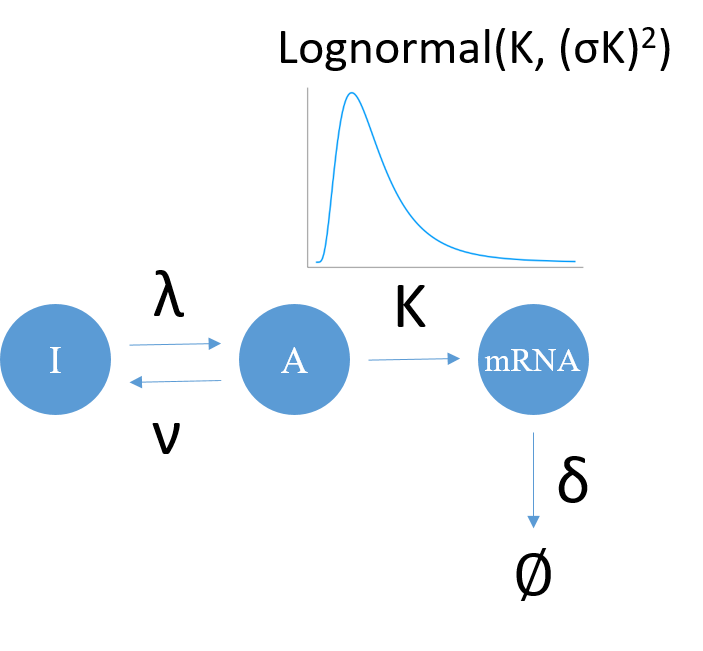

Introduction
Noise in Transcription
Transcription, or the production of mRNA molecules from a single gene is intrinsically a stochastic process (1). This intrinsic noise is usually not Poissonian, namely having a constant probability of mRNA production per unit time, but instead appears to happen in pulses (2). This characteristic behaviour is generally recognised as transcription bursting, and has been extensively studied with mathematical modelling (3). One of the most acknowledged model by far is the Telegraph model (Figure 1), in which the gene toggles between an on state and an off state, and the on state is able to give Poissonian production of mRNA (3). This stochastic model can account for the bursty behaviour of transcription with geometrically distributed burst size and exponentially distributed burst arrival time (4).

Besides the inherently stochastic transcriptional machinery, the rate parameters of gene state switching or mRNA generation (parameters in Figure 1) can also vary from cell to cell, which is regarded as the extrinsic noise. This extrinsic noise can result from heterogeneity in gene copy number or RNA polymerase copy number (5) (among many other factors), but has been said to not provide a significant contribution to heterogeneity (6). However some genes tend to produce mRNA with a more heavy-tailed distribution (7), i.e. a distribution whose tail decreases more slowly than an exponential distribution, and for which a power law distribution is an example. It has been recently demonstrated that this heavy-tailedness cannot be explained solely by the intrinsically noisy telegraph model, but compounding the model by drawing the active transcription rate K from a log-normal distribution (Figure 1, small panel) is capable of rendering the resulting mRNA distribution heavy-tailed (8). This extrinsic noise that may exist in certain genes can have functional implications, either as an additional boost in phenotypic diversity under stressful condition such as during bacteria competence (4), or as an indication of the robustness of the downstream pathways even in the presence of extra noise. Therefore interest arises in finding out whether some genes can be explained by the compound model with extrinsic noise.
Bayesian Approach in Modelling
With the increase in computational power in the recent decade, Bayesian approaches for statistical inference have been proven to be successful in the field of systems biology (9). Bayes theorem allows the straightforward incorporation of previous knowledge into the model fitting by using prior distributions, and Monte Carlo sampling can give direct access to the (posterior) probability distribution of the model parameters. MCMC is an approach for sampling from the posterior distribution via taking a random walk (or a Markov Chain) in the parameter space, with the probability of accepting the step determined by both the prior and the likelihood before and after the step (10). The posterior distribution of the parameters can then be used for model comparison.
The Project
This project aims at using the MCMC method to fit the two alternative models: the intrinsically stochastic telegraph model and the compound model with extrinsic noise on K (Figure 1 small panel), with the RNA copy numbers data from single cell RNA-seq experiments. The models enable analytical or numerical solutions to the master equations, hence the likelihood function is available for parameter inference. The inferred parameters are then used to compare the two models in order to provide insight into the presence of extrinsic noise among the genes.